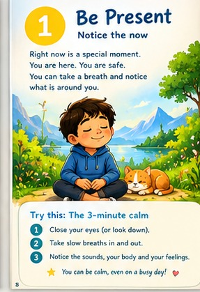
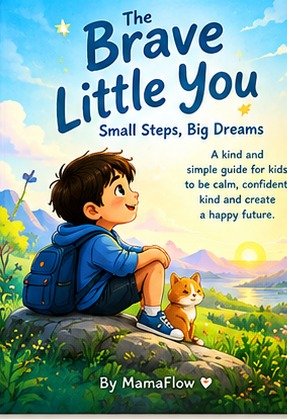
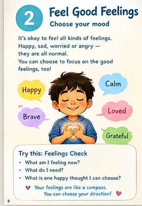
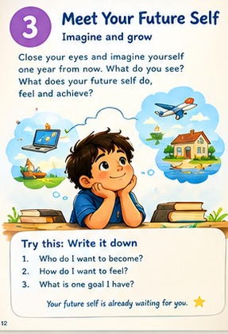
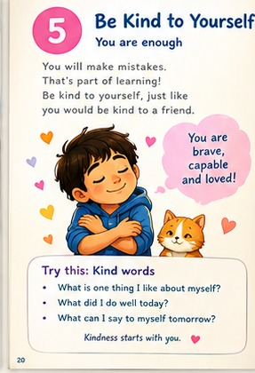
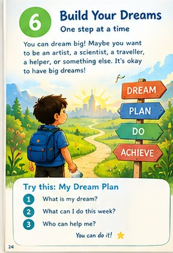
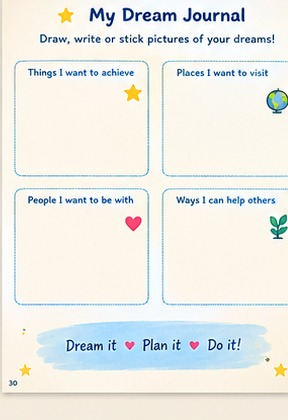
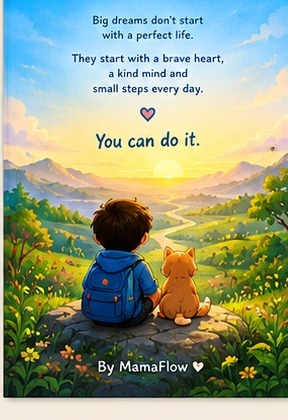
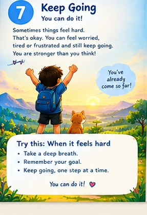
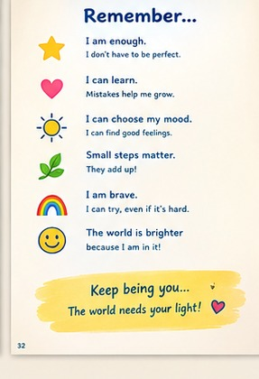

01. Be Present
Slow down and notice the world around you.
A LITTLE BOOK FOR BIG DREAMS
A gentle journey of self-discovery, confidence, feelings, and dreams. Remember that you can grow at your own pace, one small step at a time.
Created with love by MamaFlow ♡
Explore the Book →
A NOTE FOR YOU
You don't have to be perfect. You don't have to know everything. You can learn, make mistakes, ask for help, and try again.
This book invites you to notice your feelings, explore your dreams, and discover little things you can do each day.
YOUR JOURNEY
Take your time. Every little step counts.

Slow down and notice the world around you.

Your feelings matter. Learn to notice them kindly.

Imagine what you might learn and become.
Break a big dream into little steps you can take.

Speak to yourself with patience and kindness.

Explore your interests and make a little plan.

Rest when you need to, then decide on your next step.
READ AND REFLECT
Read a little, think a little, and grow at your own pace.
WELCOME

This book is for you. You do not have to be perfect, fearless, or good at everything. You only have to be you.
Inside, you will try little activities that help you notice the present moment, understand your feelings, imagine what matters to you, and choose one helpful next step.
CHAPTER 1
Pause for a moment. Notice where you are. Feel your feet on the floor. Listen for one sound nearby.
Take a slow breath in, then let it out gently. You do not need to make every thought disappear. Just notice what is happening right now.
Try it: Name three things you can see, two things you can hear, and one feeling you notice.
CHAPTER 2
Feelings are messages, not mistakes. You might feel happy, worried, sad, cross, excited, or all mixed up.
You do not have to pretend to feel fine. Name the feeling and ask yourself what might help you right now.
Try it: What am I feeling? What do I need? What kind thing can I do next?
CHAPTER 3
Imagine yourself learning something you care about. What might you be able to do after practising for a while?
Picture the effort, not only the prize. You might ask questions, try again, read, build, draw, or work with a team.
Try it: Write or draw something you want to learn and one skill you can practise.
CHAPTER 4
Big dreams can feel far away. That is okay. You do not need to finish everything today.
Break a goal into tiny steps. If you want to write a story, you could write one character's name today.
Try it: Write your goal, one tiny step you can do today, and someone who can help you.
CHAPTER 5
Everyone makes mistakes. Mistakes can show you what to practise next.
Talk to yourself as you would talk to a friend. Instead of saying, "I am terrible at this," try, "I am still learning."
Try it: Write one kind thing you can tell yourself when something is hard.
CHAPTER 6
It is wonderful to have dreams. You might want to become an artist, scientist, athlete, builder, teacher, or game designer.
You do not have to pick one dream forever. Curiosity helps you explore.
Try it: Choose something you would love to try and one thing you can do this week.
CHAPTER 7
Sometimes progress feels slow. Sometimes you will need a rest, a new idea, or help from someone you trust.
Courage does not mean never feeling scared. It can mean taking a small step while feeling nervous—or deciding to pause and try later.
DREAM JOURNAL

Draw or write your ideas. There are no perfect answers.
Something I want to learn:
A place I would love to visit:
REMEMBER

★ I am learning, one step at a time.
★ My feelings matter, and I can ask for help.
★ I can be brave and still feel nervous.
★ Mistakes help me discover what to try next.
★ I can dream big and start small.
★ I do not have to be perfect to be proud of myself.
CLOSING NOTE

Big dreams do not need a perfect beginning. They need curiosity, kindness, support, and small steps.
Keep being you. The world is better when you bring your own ideas, care, and courage into it.
With care, MamaFlow ♡
A MOMENT FOR YOU
Take a moment to notice what is around you.
A LOOK INSIDE
Explore the original illustrations from the book.

